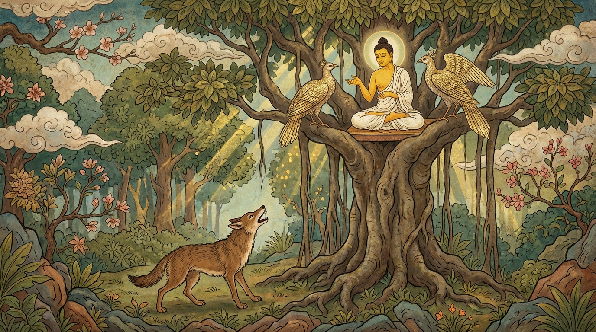

7. චතුමට්ඨ ජාතකය (187)
“උච්චෙ විටභිමාරායහ” (උස් ගසක අත්තකට නැගී) යන මේ දේශනාව බුදුරජාණන් වහන්සේ ජේතවනාරාමයේ වැඩවාසය කරන සමයෙහි එක්තරා මහලු භික්ෂුවක් මුල්කර ගෙන දේශනා කළ සේක. එක් දිනක් අගසව් දෙනම ඔවුනොවුන් ප්රශ්න අසමින් විසඳමින් සිටින අවස්ථාවක, එක්තරා මහලු භික්ෂුවක් අගසව් දෙනම ළඟට ගොස් තුන්වැන්නෙකු වී හිඳගෙන, “ස්වාමීනි, අපි ද නුඹ වහන්සේලාගෙන් ප්රශ්න විචාරන්නෙමු. නුඹ වහන්සේලාත් තමන්ගේ සැක කරුණු ඇතොත් අපෙන් විමසුව මැනව” යි කීවේය. අගසව්වෝ ඒ භික්ෂුව පිළිකුල් කොට නැගිට වැඩියහ. තෙරුන් වහන්සේලාගෙන් බණ ඇසීමට සූදානම්ව සිටි පිරිස රැස්වීම විසිරී ගිය අවස්ථාවෙහි බුදුරජාණන් වහන්සේ වෙත ගොස් සිටින විට, “අවේලාවේ කුමක් නිසා පැමිණියහුදැ” යි වදාළ කල්හි ඒ සිද්ධිය දන්වා සිටියහ. එවිට බුදුහු, “මහණෙනි, සැරියුත් මුගලන් දෙදෙනා මේ භික්ෂුව පිළිකුල් කොට කථා නොකර ඉවත්ව ගියේ දැන් පමණක් නොවේ, පෙරත් මෙසේ ඉවත්ව ගියාහු ය” යි වදාරා අතීත කථාව ගෙනහැර දැක්වූ සේක.
යටගිය දවස බරණැස් නුවර බ්රහ්මදත්ත රජු රජ කරද්දී බෝසතාණන් වහන්සේ වනාන්තරයක රුක් දෙවියෙකු වී උපන් සේක. ඉක්බිති හංස පැටව් දෙදෙනෙක් චිත්රකූට පර්වතයෙන් නික්මී ඒ ගසෙහි හිඳ, ගොදුරු සොයා ගොස් ආපසු එමින් ද එහි විවේක ගනිති. කල් යත්ම ඒ බෝසතාණන් වහන්සේ සමඟ හංස පෝතකයන්ගේ විශ්වාසයක් ඇති විය. යන එන ගමන්වලදී ඔවුනොවුන් සතුටු වී දැහැමි කථා කියා යන්නාහුය. ඉක්බිති එක් දිනක් ඔවුන් ගස මුදුනේ සිට බෝසතාණන් වහන්සේ සමඟ කථා කරන කල්හි එක් හිවලෙක් ඒ ගස යට සිට ඒ හංස පැටවුන් සමඟ කථා කරමින් පළමු ගාථාව කීවේය.
“උස් ගසක අත්තකට නැගී රහසිගතව මන්ත්රණය කරන්නාහුය. බිමට බැස කථා කරව්. මෘගරාජයා (සිංහයා) ද අසන්නේය.”

එහි, උච්චෙ විටභිමාරුය්හ යනු ස්වභාවයෙන්ම උස මේ ගසෙහි වඩා උස දෙබලකට නැගී යන්නයි. මන්තයව්හො යනු මන්ත්රණය කරව්, කථා කරව් යන්නයි. නීචෙ ඔරුය්හ යනු ගසින් බැස පහත් තැන සිට මන්ත්රණය කරව් යන්නයි. මිගරාජාපි සොස්සති යනු තමා සිංහයෙකු කොට සලකා කීවේය. හංස පැටව් හිවලා පිළිකුල් කොට නැගිට චිත්රකූටයටම ගියෝය.
ඔවුන් ගිය කල්හි බෝසතාණන් වහන්සේ හිවලාට දෙවන ගාථාව කී සේක.
“යම් හෙයකින් හංසයා හංසයා සමග ද, දෙවියා දෙවියා සමග ද මන්ත්රණය කෙරේ ද, ඒ මන්ත්රණයෙහි (කතාවෙහි) ශරීරය, ජාතිය, ස්වරය, ගුණය යන සතර කරුණින් ඔපමට්ටම් වූ (පිරිසිදු වූ) තට කවර නම් ප්රයෝජනයක් ද? සිගාලය! බිලයට පිවිසෙව.”
එහි, සුවණ්ණො යනු යහපත් පියාපත් ඇති හංසයා ය. සුවණ්ණෙන යනු දෙවන හංස පෝතකයා සමග ය. දෙවො දෙවෙන යනු ඒ දෙදෙනාම දෙවියන් කොට සලකා කියයි. චතුමට්ඨස්ස යනු සිරුරෙන්, ජාතියෙන්, හඬින් සහ ගුණයෙන් යන මේ කරුණු හතරින් ඔපමට්ටම් වූ, පිරිසිදු වූ ඔබට යන වචනාර්ථයයි. අපිරිසිදු වූ හිවලාට ප්රශංසා වචනයෙන් නින්දා කරමින් මෙසේ කීය. මේ කරුණු හතරින් ලාමක වූ, පහත් වූ හිවලාට ඔබට මෙහි කවර ප්රයෝජනයක් ද යන්න මෙහි අදහසයි. බිලං පවිස යනුවෙන් බෝසතාණන් වහන්සේ බියජනක අරමුණු පෙන්වා හිවලා පලා යවමින් කීහ.
බුදුරජාණන් වහන්සේ මේ ධර්ම දේශනාව ගෙනහැර දක්වා ජාතක කථාව නිමවා වදාළ සේක. “එකල හිවලා වූයේ මේ මහලු පැවිද්දා ය. හංස පෝතකයෝ දෙදෙනා සැරියුත් මුගලන් දෙදෙනා ය. රුක් දෙවියා වනාහි මම ම වෙමි” යි වදාළ සේක.
සත්වන චතුමට්ඨ ජාතක වර්ණනාව නිමාවිය.